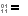
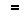

In the Actions menu, the Compare Contents  command performs content comparisons on the selected pairs of files to determine if they match.
command performs content comparisons on the selected pairs of files to determine if they match.
Content comparison methods
CRC comparison compares files using their CRC values.
Binary comparison compares files byte-by-byte.
Rules-based comparison compares files based on their file format associations. It allows you to define unimportant differences, such as changes in whitespace or source code comments. A rules-based comparison can also ignore differences in file encoding or line endings.
Results of content comparisons
CRC and Binary comparisons return one of these results:
 |
Binary same |
The files are exactly the same. |
Binary differences |
At least one byte is different between the files. |
Rules-based comparisons have a built-in binary comparison and return one of these results:
Binary same |
The files are exactly the same. |
|
 |
Rules-based same |
The files have binary differences, such as character encoding, that can be ignored. |
Unimportant differences |
A rules-based comparison found only unimportant differences. |
|
Important differences |
A rules-based comparison found important differences. |
When content comparisons are performed
Content comparisons are performed:
•when a folder session is loaded, and its session settings call for automatic content comparisons
•explicitly, when the Compare Contents  command is used
command is used
•when a pair of files is opened in a file session